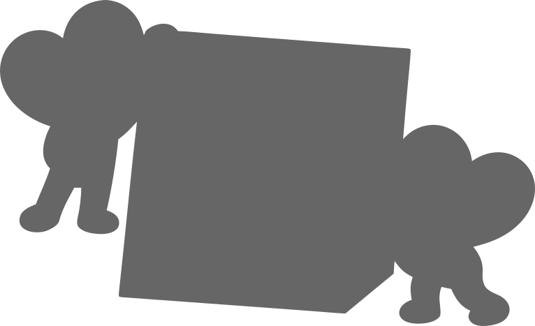
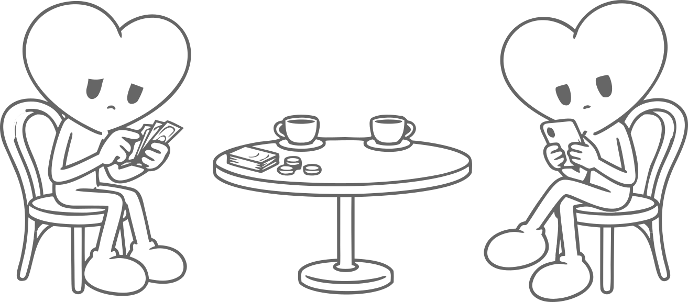

Уже всё понятно?
Спецпроект о ярлыках в отношениях:
как мы делаем выводы и что упускаем
- 1
Узнайте ситуацию
Не пишет первым, предлагает разделить счёт, не выкладывает общие фото
- 2
Посмотрите глубже
Откройте детали каждой истории и проверьте, изменится ли ваше мнение

Счёт пополам.
Какие ярлыки навесим?

Листай, чтобы увидеть больше ↓